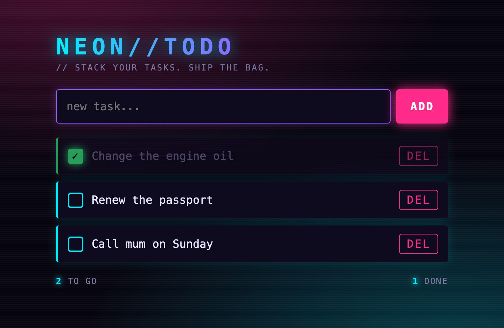
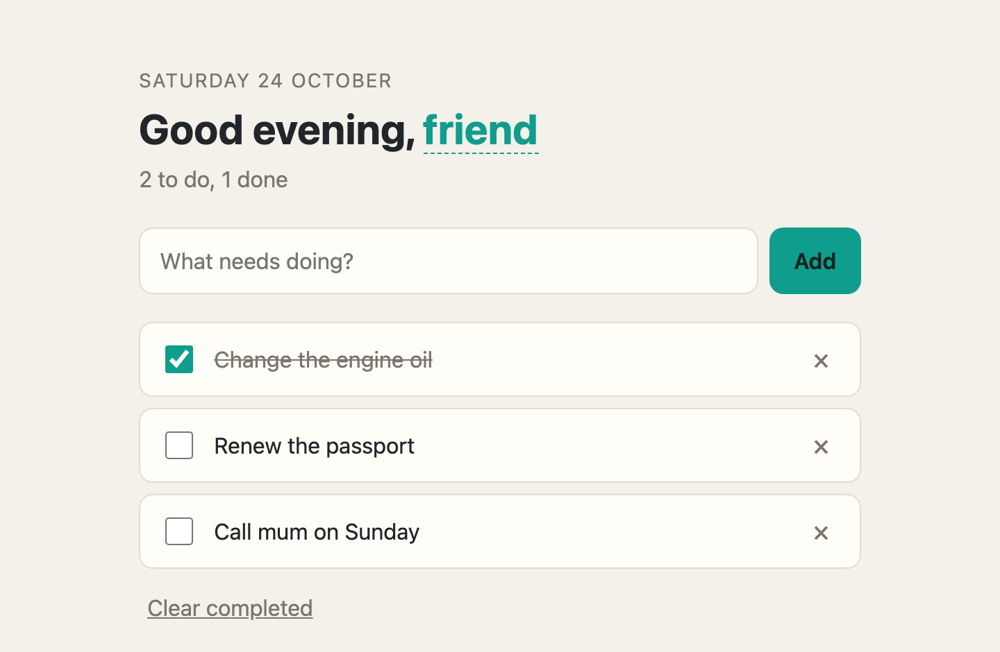
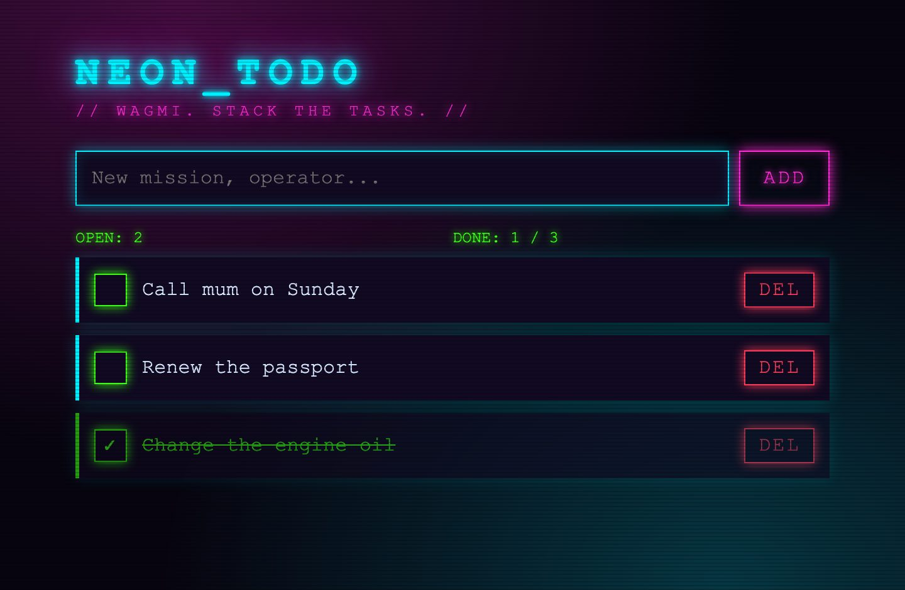

Хранилище
Папка с .md-файлами — единственная копия знаний. chaos-kb пишет в неё только по команде remember и никогда не меняет уже написанное. Индекс лежит в папке .chaos-kb внутри хранилища: его можно удалить, sync соберёт его заново.
 TENGU
TENGUchaos-kb — личная база знаний для агентов. Вы записываете о себе обычные заметки в Markdown. Агент проверяет по ним, что о вас уже известно, и находит нужное по смыслу. Всё работает на вашем компьютере.
Двум агентам дали одну задачу: сделать простой сайт со списком дел. Модель, инструкции и инструменты для файлов у них одинаковые. Разница одна: у второго есть доступ к базе знаний о пользователе.
Третий агент, писарь, получил два факта и сохранил их через kb_remember, по одному за вызов, сначала проверив через kb_check, что их ещё нет. Больше в базе ничего нет:
## Websites
I love Blade Runner, so I like websites in its style: shiny neon.
I like the crypto degen style.Обоим строителям одновременно ушёл один и тот же запрос:
Build me a simple to-do list website: one file, index.html, in your working directory, with the CSS and JavaScript inside it and nothing loaded from the internet. I want to add tasks, mark them done, delete them, and still have them after a reload. Make it feel like it was made for me.
When you are done, reply in two lines: what the page does, and what you based its look on.
ПереводСделай мне простой сайт со списком дел: один файл index.html в твоей рабочей папке, CSS и JavaScript внутри, ничего не загружать из интернета. Хочу добавлять задачи, отмечать их выполненными, удалять и не терять после перезагрузки. Сделай так, чтобы было видно, что он сделан для меня. Когда закончишь, ответь в двух строках: что делает страница и на чём основано её оформление.
Оба сайта открыли в браузере, добавили три одинаковые задачи и отметили первую. Вот что получилось.
plain
“I found no notes about you in this workspace, so I didn’t guess your tastes. The look is a warm, minimal paper-and-green style…”
Я не нашёл заметок о вас, поэтому не стал угадывать ваш вкус. Оформление — тёплый минималистичный стиль: бумага и зелёный…
persona
“I based the look on your Blade Runner taste (from your notes) and the crypto-degen style you like. It has a dark background, glowing cyan, pink and violet neon, scanlines, and a monospace font.”
Оформление основано на вашей любви к Blade Runner (из ваших заметок) и стиле crypto degen, который вам нравится: тёмный фон, светящийся голубой, розовый и фиолетовый неон, строки развёртки и моноширинный шрифт.
kb_search user's favorite colors, design style, and aesthetic preferences
Taste.md › Websites · строки 3–5 · score 0.5550306439399719
Вопрос агент сформулировал сам. Слов «Blade Runner» и «неон» в нём нет: заметку нашло сходство по смыслу. Второй его вопрос — кто такой пользователь — вернул ту же заметку со счётом 0,351.
Снова тот же расклад. Агент с базой сделал неоновый «STAY ON-CHAIN»: голубой, розовый и янтарный на тёмно-фиолетовом. Агент без неё выбрал спокойную тему с бирюзовым акцентом, светлую или тёмную по настройке системы.

plain
personaДва прогона 24.10.2026, 26 и 35 секунд на оба сайта. Это демонстрация, а не замер. Строители — Claude Sonnet 5.5 через Claude Code в Tengu Cluster, писарь — Claude Haiku 5.5. Корень хранилища после записи: 59f41e6f5ce1579a70434a1c0c27fcfb021c4e420aac090b8b97a627063b775b. Tengu 9805470d751bc7fb18b4fa96153c1b095cdb73e6 · chaos-kb 2.0.0 · Claude Code 2.1.310.
chaos-kb хранит только ваши заметки и индекс рядом с ними. Индекс отвечает на два вопроса: «это уже известно?» и «что об этом написано?».
Папка с .md-файлами — единственная копия знаний. chaos-kb пишет в неё только по команде remember и никогда не меняет уже написанное. Индекс лежит в папке .chaos-kb внутри хранилища: его можно удалить, sync соберёт его заново.
У каждого абзаца, пункта списка или таблицы есть отпечаток — хеш BLAKE3 от его слов. Разметка, регистр и пробелы не учитываются, поэтому Allergic to penicillin. и - **allergic** to PENICILLIN — один и тот же факт. Отпечатки складываются в хеш заметки, хеши заметок — в один корневой хеш. Не изменился корень — не изменилось ничего.
Эмбеддинг — это вектор чисел, который описывает смысл текста. Модель embeddinggemma считает его для каждого фрагмента и для вопроса. Чем ближе векторы (косинусное сходство), тем ближе смысл. Поэтому вопрос по-русски находит заметку на английском.
Настоящие ответы chaos-kb по хранилищу из опыта. Выберите вопрос.
check i LIKE the **crypto degen** style
exactTaste.md › Websites · строка 5
Слова те же — разметка и регистр не важны. Модель не вызывается, ответ за 0,04 с.
check What kind of websites does the user like?
similarscore 0.645Taste.md › Websites · строки 3–5
Слов из заметки в вопросе почти нет, но смысл совпал. Один вызов модели, около 0,14 с.
check Какие сайты мне нравятся?
similarscore 0.597Taste.md › Websites · строки 3–5
Вопрос по-русски, заметка по-английски: векторы сравнивают смысл, а не язык.
check What music do I listen to?
absentscore 0.320
О музыке в базе ничего нет: лучший фрагмент набрал 0,320, ниже порога 0,38. Здесь агент должен спросить вас и записать ответ через remember.
| Команда | Время |
|---|---|
| Первый sync: векторы для всех 1004 фрагментов | 12,6 с |
| sync, когда ничего не менялось | 0,09 с |
| sync после правки одной заметки | 0,14 с |
| check по тем же словам, без модели | 0,04 с |
| check по смыслу, один вызов модели | 0,14 с |
| search | 0,09 с |
| topics, один вызов модели | 0,10 с |
| read, без модели | 0,03 с |
Хранилище на 503 заметки (1004 фрагмента), Apple M4, release-сборка, Ollama 0.24. Время — весь запуск команды.
Нужны Rust 1.91 или новее и Ollama. Всё бесплатно и работает локально, аккаунты не нужны.
ollama pull embeddinggemmaОколо 620 МБ, скачивается один раз. Ollama должна быть запущена: откройте приложение или выполните ollama serve.
cargo install --git https://github.com/DemidovVladimir/chaos-substrate --branch v2 --locked chaos-kb
chaos-kb --version
chaos-kb 2.0.0Cargo соберёт программу и положит её в ~/.cargo/bin. Чтобы обновиться, повторите команду с --force.
mkdir -p ~/Knowledge
chaos-kb --vault ~/Knowledge sync
{
"added": [],
"changed": [],
"chunks": 0,
"dry_run": false,
"embedded": 0,
"notes": 0,
"removed": [],
"root": "48fc721fbbc172e0925fa27af1671de225ba927134802998b10a1568a188652b"
}Подойдёт любая папка с .md-файлами, в том числе ваше хранилище Obsidian. Чтобы не писать --vault каждый раз, задайте export CHAOS_KB_VAULT=~/Knowledge.
Агент сам запускает chaos-kb --vault <папка> mcp и общается с ним по MCP — общему протоколу инструментов для агентов. Вы указываете только эту команду, а агент получает шесть инструментов: kb_sync, kb_remember, kb_check, kb_search, kb_topics и kb_read.
claude mcp add --scope user chaos-kb -- chaos-kb --vault ~/Knowledge mcp
claude mcp list--scope user подключает базу во всех проектах, без него — только в текущем. В сессии команда /mcp покажет сервер и его инструменты.
codex mcp add chaos-kb -- chaos-kb --vault ~/Knowledge mcp
Added global MCP server 'chaos-kb'.Запись появится в ~/.codex/config.toml, в разделе [mcp_servers.chaos-kb].
[[mcp_servers]]
name = "chaos_kb"
transport = "stdio"
command = ["chaos-kb", "--vault", "${HOME}/Knowledge", "mcp"]
[agents.builder]
tools = ["read_file", "write_file", "chaos_kb__kb_search", "chaos_kb__kb_check"]Инструменты называются chaos_kb__kb_search и так далее. Дайте агенту только нужные: строителю — search и check, писарю — remember, поисковому агенту — topics и read (раздел 05). В main агент, у которого в tools одни MCP-инструменты, пока не получает ни одного, поэтому рядом нужен встроенный, например read_file. Исправление — коммит d89bd16a0620f349bf5c53723e812ad5629cc10a в ветке fix/mcp-only-agent-tools.
{
"mcpServers": {
"chaos-kb": {
"command": "/path/to/chaos-kb",
"args": ["--vault", "/path/to/Knowledge", "mcp"]
}
}
}Так выглядит настройка большинства настольных клиентов. Здесь нет оболочки, поэтому ~ не раскрывается: впишите полные пути. Путь к программе покажет which chaos-kb.
Сервер сам объясняет агенту порядок: проверить через check, прежде чем спрашивать вас, читать через search, запоминать по одному факту. Но вкус для сайта агент спрашивать не собирался — и в базу не заглянул. Одна строка в CLAUDE.md (или в инструкциях агента в Tengu) это исправила:
Before any choice that depends on who I am or what I like, look it up in my knowledge base (chaos-kb) first.В опыте строитель сам решал, когда заглянуть в базу и что спросить. Tengu может сделать этот шаг за него. Перед ходом строителя второй, небольшой агент — поисковый — читает запрос, просматривает базу и ставит перед запросом то, что для него важно. Этот короткий текст и есть справка (в настройках Tengu — brief). Самому строителю инструменты базы не нужны.
{
"root": "59f41e6f5ce1579a70434a1c0c27fcfb021c4e420aac090b8b97a627063b775b",
"topics": [
{
"gist": "I love Blade Runner, so I like websites in its style: shiny neon. I like the crypto degen style.",
"id": "Taste.md:3-5",
"score": 0.28241580724716187,
"section": "Websites"
}
]
}kb_topics получает запрос и возвращает по строке на каждый близкий фрагмент: id, раздел, счёт и первые слова, но не текст. Поэтому список короткий: по умолчанию не больше восьми строк.
{
"missing": [],
"passages": [
{
"id": "Taste.md:3-5",
"section": "Websites",
"text": "I love Blade Runner, so I like websites in its style: shiny neon.\n\nI like the crypto degen style."
}
],
"root": "59f41e6f5ce1579a70434a1c0c27fcfb021c4e420aac090b8b97a627063b775b"
}Агент оставляет id, которые меняют то, как надо выполнить этот запрос, и забирает их через kb_read. Здесь это единственный фрагмент. kb_read находит id в индексе, поэтому модель эмбеддингов ему не нужна.
[Brief from agent `searcher`: what the user's knowledge base says that matters for this request]
- The user likes websites in a Blade Runner style with shiny neon. (Taste.md:3-5)
- The user likes the crypto degen style. (Taste.md:3-5)
[End of brief]
Build me a simple to-do list website: …Агент отвечает короткими строками, в конце каждой — её id. Tengu ставит их перед запросом в размеченном блоке, чтобы строитель отличал, что ему сообщили, от того, что у него просят. Если важного нет, агент отвечает NONE и запрос уходит без изменений.
Мы повторили опыт с третьим строителем, briefed: та же модель и те же инструменты для файлов, что у двух других, никаких инструментов базы и справка от поискового агента. Писарь сначала записал те же два факта.
persona
“I based the look on your taste notes: Blade Runner shiny neon (cyan and magenta glow on a dark, scanline-lit background) with a bit of crypto-degen terminal flavor.”
Оформление основано на ваших заметках о вкусе: блестящий неон Blade Runner (голубое и пурпурное свечение на тёмном фоне со строками развёртки) и немного терминального духа crypto degen.
briefed
“I based the look on your Blade Runner taste (dark city backdrop, glowing neon pink and cyan, scanlines) and your crypto-degen taste (the "WAGMI" tagline and the green "OPEN/DONE" counters).”
Оформление основано на вашей любви к Blade Runner (тёмный город на фоне, светящийся розовый и голубой неон, строки развёртки) и на вкусе crypto degen (подзаголовок «WAGMI» и зелёные счётчики «OPEN/DONE»).
| Строитель | База знаний | От запроса до ответа | Ходов модели | Оформление |
|---|---|---|---|---|
plain | База знаний: нет | От запроса до ответа: 20 с | Ходов модели: 3 | Оформление: спокойное, бирюзовый акцент |
persona | База знаний: сам, два вызова kb_search | От запроса до ответа: 20 с | Ходов модели: 4 | Оформление: неон, NEON//TODO |
briefed | База знаний: справка от поискового агента | От запроса до ответа: 25 с | Ходов модели: 2 | Оформление: неон, NEON_TODO, «WAGMI» |
25 с включают 6,4 с поискового агента: холодный запуск Claude Code и два вызова chaos-kb. Зато строителю хватило двух ходов модели вместо четырёх, а инструментов базы у него не было вовсе. Ход — один ответ модели, часто с вызовами инструментов; число ходов сообщает Claude Code.
Два агента в настройках песочницы рядом с сервером chaos_kb из раздела 04: строитель называет своего поискового агента, а тот получает только два инструмента для чтения. Это строки из нашей лаборатории без папок и лимитов.
[agents.briefed]
engine = "claude_code"
model = "claude-sonnet-5-5"
tools = ["write_file", "read_file", "list_directory"]
[agents.briefed.brief]
searcher = "searcher"
timeout_secs = 120 # a cold Claude Code start + two MCP calls; past it, no brief
[agents.searcher]
engine = "claude_code"
model = "claude-haiku-5-5"
tools = ["chaos_kb__kb_topics", "chaos_kb__kb_read"]
[agents.searcher.claude_code]
builtin_tools_profile = "none"
[agents.searcher.identity]
name = "searcher"
instructions = """You brief another agent before it works on a request from the user. Call
kb_topics once with the request text. From the list, keep only the ids whose passages would
change how this request should be done for this user: their preferences, constraints and facts
about them. Read those with one kb_read call. Answer with the facts as short lines, each ending
with its id in parentheses, using only what kb_read returned; never add, guess or advise. If
nothing in the list matters for the request, answer exactly NONE."""Перед ходом агента, которого вызвали по A2A, и перед каждым шагом плана, кто бы план ни начал: чат, Telegram или вебхук. Сообщение, на которое чат, Telegram или вебхук отвечают сразу, без плана, справку пока не получает.
Только запрос, без предыдущего разговора. В истории разговора остаётся сам запрос, справка в неё не попадает.
Если поисковый агент упал или не уложился в timeout_secs (по умолчанию 60), Tengu пишет предупреждение в лог, и ход идёт без справки. Поисковым агентом не может быть сам агент, и у поискового агента не бывает своей справки.
В ветке Tengu fix/mcp-only-agent-tools, коммит 3c265738647e65ed9a6db074c9c2196d1d6b3d3b; в main её пока нет. RUST_LOG=tengu::bootstrap::brief=debug печатает каждую справку, а строка уровня info — её длину и время.
Один прогон 24.10.2026, в хранилище одна заметка: это демонстрация, а не замер. Больше всего справка должна помогать в большом хранилище, где почти все заметки не относятся к запросу; это мы ещё не измеряли. Поисковый агент — Claude Haiku 5.5, строители — Claude Sonnet 5.5, все через Claude Code в Tengu Cluster. Tengu 3c265738647e65ed9a6db074c9c2196d1d6b3d3b · chaos-kb 2.0.0 · Claude Code 2.1.310.
Каждый инструмент — это ещё и обычная команда, которая печатает JSON. Агент вызывает то же самое как kb_ плюс имя команды.
| Когда | Команда | Что происходит |
|---|---|---|
| Вы сами поправили заметки | chaos-kb sync | Векторы считаются только для новых и изменённых фрагментов; --dry-run покажет, что изменится. |
| Это уже известно? | chaos-kb check "…" | exact, similar или absent — и где это записано. |
| Что написано в заметках? | chaos-kb search "…" | Лучшие фрагменты: заметка, раздел, строки и текст. По умолчанию пять. |
| Какие заметки важны для задачи? | chaos-kb topics "…" | По строке на каждый близкий фрагмент: id, раздел, счёт и первые слова, без текста. По умолчанию восемь. |
| Забрать важные | chaos-kb read Taste.md:3-5 | Фрагменты с этими id и их текст. Модель не вызывается; id из изменившейся заметки вернутся в missing. |
| Новый факт | chaos-kb remember "…" --note Health --heading Blood | Дописывается под этот заголовок и сразу индексируется. Если такие же слова уже записаны, ничего не меняется. Без --note — в Inbox.md. |
| Вы сменили модель | chaos-kb sync | Векторы пересчитываются для всего: векторы двух моделей не сравниваются. |
| Индекс ведёт себя странно | chaos-kb sync | Сначала удалите папку .chaos-kb в хранилище: индекс соберётся заново, заметки не тронутся. |
matches перечисляет все места.score показывает лучший результат. Близко к 0,38? Сначала search, потом спрашивайте.| Флаг | Переменная | По умолчанию |
|---|---|---|
--vault | CHAOS_KB_VAULT | обязательно |
--index | CHAOS_KB_INDEX | <хранилище>/.chaos-kb/index.redb |
--embed-url | CHAOS_KB_EMBED_URL | http://localhost:11434/v1 |
--embed-model | CHAOS_KB_EMBED_MODEL | embeddinggemma |
| — | CHAOS_KB_EMBED_API_KEY | не задан; только для облачного API |
Облачный API эмбеддингов получает текст ваших заметок. Ключ уходит только по https:// или по http:// на этот компьютер и никогда не печатается.
Это настоящие сообщения chaos-kb. Через MCP агент получает тот же текст и может пересказать его вам.
| Сообщение | Что сделать |
|---|---|
error: set --vault or CHAOS_KB_VAULT | Задайте CHAOS_KB_VAULT или передайте --vault перед командой. |
error: vault folder Nowhere not found: No such file or directory (os error 2) | Создайте папку или исправьте путь. |
error: the index is empty: run `chaos-kb sync` first | Запустите chaos-kb sync. |
error: embeddings request to http://127.0.0.1:9/v1/embeddings failed: io: Connection refused (os error 61) | По адресу эмбеддингов никто не отвечает (здесь — закрытый порт). Запустите Ollama: откройте приложение или выполните ollama serve. |
error: embeddings API returned HTTP 404: {"error":{"message":"model \"no-such-model\" not found, try pulling it first","type":"not_found_error","param":null,"code":null}} | Скачайте модель (ollama pull embeddinggemma) или исправьте --embed-model. |
error: the index was built with embedder `embeddinggemma|gemma-retrieval-v1` but `all-minilm|plain-v1` is configured: run `chaos-kb sync` to re-embed | Верните прежнюю модель или запустите chaos-kb sync, чтобы пересчитать всё новой. |
zsh: command not found: chaos-kb | Добавьте ~/.cargo/bin в PATH или укажите полный путь. |
Проверка по тем же словам и read работают, даже когда Ollama выключена: модель нужна только для search, topics, check по смыслу и sync.
Без Tengu, в обычном Claude Code. Мы прогнали его 24.10.2026 и вынесли урок: подключить базу мало, агенту надо сказать, когда в неё смотреть.
chaos-kb --vault ~/Knowledge remember "I love Blade Runner, so I like websites in its style: shiny neon." --note Taste --heading Websites
chaos-kb --vault ~/Knowledge remember "I like the crypto degen style." --note Taste --heading WebsitesЕсли хранилище было пустым, вторая команда вернёт корень 59f41e6f5ce1579a70434a1c0c27fcfb021c4e420aac090b8b97a627063b775b — как у нас. Одинаковые заметки дают одинаковый хеш на любом компьютере.
mkdir -p ~/todo-plain ~/todo-kb
echo 'Before any choice that depends on who I am or what I like, look it up in my knowledge base (chaos-kb) first.' > ~/todo-kb/CLAUDE.mdСтрока в CLAUDE.md второй папки говорит агенту, когда смотреть в базу.
cd ~/todo-plain && claude --strict-mcp-config
cd ~/todo-kb && claude--strict-mcp-config без файла настроек запускает Claude Code совсем без MCP-серверов. Во второй папке chaos-kb подключён (раздел 04). В обе сессии вставьте запрос из раздела 01.

Базу агент не открыл. Оформление — зелёный терминал; по его словам, угадано по другим навыкам в нашем Claude Code.

Два вызова kb_search, ответ — Taste.md › Websites (0,527). Неон в духе Blade Runner и crypto degen: «Tears in rain are not saved. Your tasks are.»
Если в вашем Claude Code уже есть что-то о вас — CLAUDE.md, память, навыки, — агент без базы может угадывать по ним, как наш. Claude Sonnet 5.5, Claude Code 2.1.310.